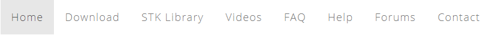
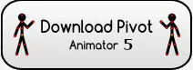
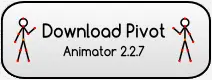
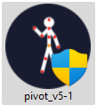
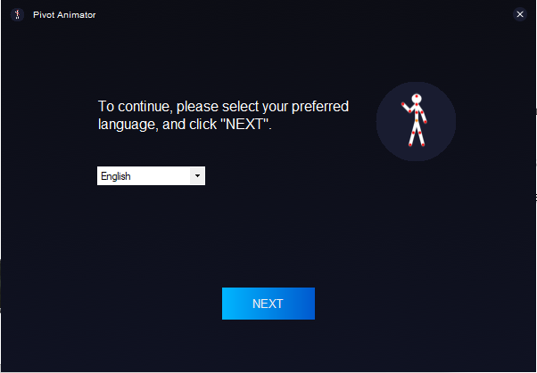
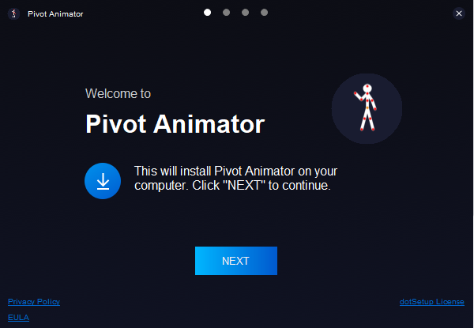
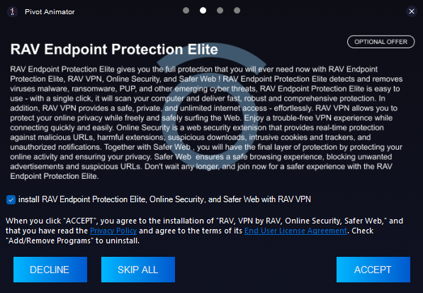
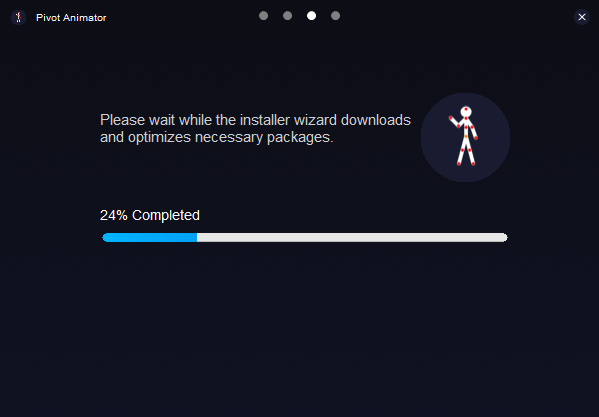
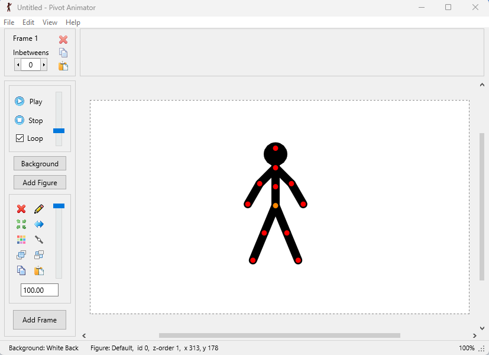

Poradnik jak zainstalować scratch.
- W dowolnej wyszukiwarce wklejasz ten o to link ,,https://pivotanimator.net'' ,lub klikasz grafike poniżej.
- Po wejściu na tą stronę wyszukujesz napisu download i go klikasz.

- Teraz wybierz odpowiadającą ci wersje pivota spośród możliwych do wyboru i klikasz ,,download'' i po przeniesieniu dalej znów klikasz ,,download''(w tym poradniku pivot 5).
 
- Na owej stronie po przeczytaniu informacji jakie ona zawiera klikasz znów next.

- Następnie wybierasz język ci odpowiadający i klikasz ,,next'' co przeniesie cię do kolejnej strony tego instalatora.

- Na owej stronie znów klikasz ,,next''.

- Na następnej jak i teraźniejszej stronie czytasz informacje jakie na niej widnieją i klikasz jeden z trzech przycisków z textem w zależności od tego jaki klikniesz spowoduje on inne działanie (w poradniku zostanie kliknięty ,,accept’’)
- Na kolejnej stronie znów klikasz ,,accept’’.Po kliknięciu go program zostanie zainstalowany.

- Po zainstalowaniu wybieramy czy chcemy aby program nam się uruchomił i klikamy ,,finish’’ .

- program powinien wyglądać jak na obrazku poniżej
